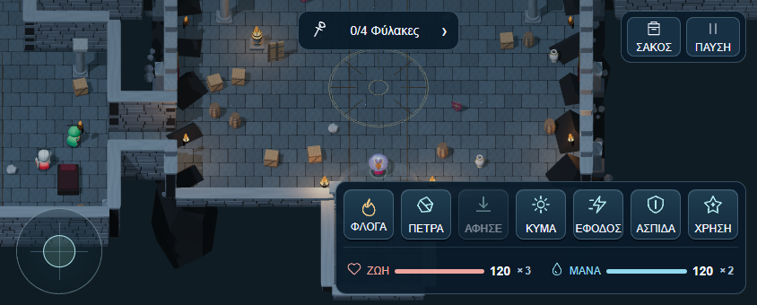

MAGIC · ORBIT HANDS · LANDSCAPE
Ένα ενιαίο HUD για τη μάχη
Health αριστερά και mana δεξιά, δίπλα-δίπλα κάτω από τα skills. Το πάνω αριστερό μέρος μένει ελεύθερο.


Στο κινητό γύρισε την οθόνη οριζόντια. Πάτησε την εικόνα για μεγέθυνση.
Κατάσταση κάτω από τα skills
Ζωή αριστερά, mana δεξιά, στην ίδια γραμμή. Το × δείχνει τα διαθέσιμα φίλτρα· πάτησε τη γραμμή του αντίστοιχου πόρου για χρήση.
Actions σε σειρά
Επτά ισομεγέθη πλήκτρα. Η στολή χρησιμοποιεί τις ίδιες θέσεις, με ΠΑΤΗΜΑ αντί ΚΥΜΑ.
Πληροφορίες όταν τις ανοίγεις
Το ΣΑΚΟΣ ανοίγει και κλείνει το live inventory με τον 3D χαρακτήρα. Το «0/4 Φύλακες» ανοίγει την αποστολή και τα συμβάντα.